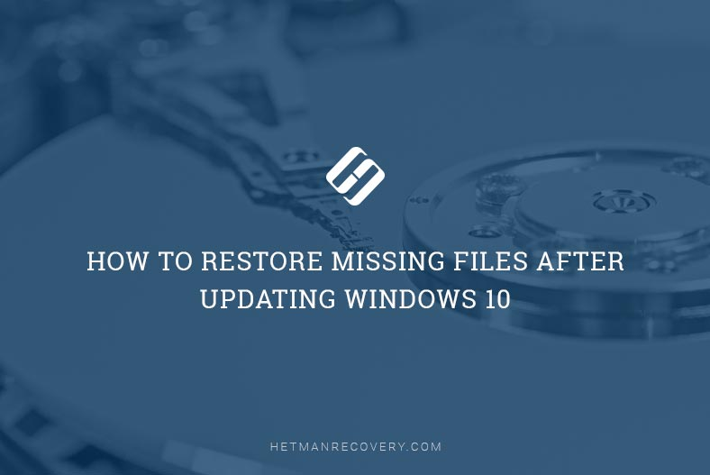

Марат Гореев | Welfegor
Гореев Марат, 12 марта 2021
Сила: 97
Ловкость: 92
Выносливость: 104
Интеллект: 134
Мудрость: 119
Ловкость: 92
Выносливость: 104
Интеллект: 134
Мудрость: 119
Особенность:
<Гений>
<Классификатор>
<Любимчик взрослых>
<Спорщик>
<Разум игрока>
<Упорный>
<Моногамия>
Новость дня: How to Restore Hard Disk Capacity and Recover Missing Space
Whatever are the causes behind the incorrectly displayed disk space, there are a few ways to eliminate them and restore the seemingly lost space. In today’s article, we will examine the most widespread causes behind this issue and suggest a couple of methods to solve the problem.
Link: Тыц
Задания:
<А я чем хуже?>
Цель: Создать виртуальную реальность с полным погружением
Условия выполнения: Создание виртуальной реальности с полным погружением
Временные рамки: время жизни(??)
Описание: после просмотра аниме "Мастера меча онлайн" вы загорелись идеей создать нечто похожее на то, что создал Акихико Каяба. На горе должен остаться только один лев, а гений тут только я.
Цель: Создать виртуальную реальность с полным погружением
Условия выполнения: Создание виртуальной реальности с полным погружением
Временные рамки: время жизни(??)
Описание: после просмотра аниме "Мастера меча онлайн" вы загорелись идеей создать нечто похожее на то, что создал Акихико Каяба. На горе должен остаться только один лев, а гений тут только я.
<Личинка человека>
Цель: Стать студентом
Условия выполнения: Стать студентом
Временные рамки: 75/80/90 дней
Описание: пора явить ваш гений миру, и надо с чего-то начинать. Поступите в университет для получения начальных знаний.
Цель: Стать студентом
Условия выполнения: Стать студентом
Временные рамки: 75/80/90 дней
Описание: пора явить ваш гений миру, и надо с чего-то начинать. Поступите в университет для получения начальных знаний.
<Из всех гений только я>
Цель: Стать лучшим программистом в мире
Условия выполнения: Становление лучшим программистом мира
Временные рамки: время жизни(??)
Описание: итак, вам понравилось программирование и вы выбрали его для себя как основной вид деятельности. Но вы же гений, и стать лучшим во всём для вас обязательно!
Цель: Стать лучшим программистом в мире
Условия выполнения: Становление лучшим программистом мира
Временные рамки: время жизни(??)
Описание: итак, вам понравилось программирование и вы выбрали его для себя как основной вид деятельности. Но вы же гений, и стать лучшим во всём для вас обязательно!
<Реальный геймер>
Цель: Создать систему "The gamer" в реальной жизни
Условия выполнения: Создание системы "The gamer" в дополненной реальности в реальной жизни
Временные рамки: время жизни(??)
Описание: начитавшись фанфиков с системой геймер, вы решили воссоздать подобное в реальности. Так как вы гений, выполнение этой прихоти обязательно.
Цель: Создать систему "The gamer" в реальной жизни
Условия выполнения: Создание системы "The gamer" в дополненной реальности в реальной жизни
Временные рамки: время жизни(??)
Описание: начитавшись фанфиков с системой геймер, вы решили воссоздать подобное в реальности. Так как вы гений, выполнение этой прихоти обязательно.
<Интеллектуал>
Цель: Прочитать всех выдающихся философов
Условия выполнения: Прочтение всех выдающихся философов
Временные рамки: 7,2 года (до 25 лет)
Описание: все умные люди, которых вы знаете, интересуются философией. Так как вы гений, то и общаться хотите с умнейшими людьми, а без знания философии это невозможно.
Цель: Прочитать всех выдающихся философов
Условия выполнения: Прочтение всех выдающихся философов
Временные рамки: 7,2 года (до 25 лет)
Описание: все умные люди, которых вы знаете, интересуются философией. Так как вы гений, то и общаться хотите с умнейшими людьми, а без знания философии это невозможно.
<With facts and logic>
Цель: Изучить логику
Условия выполнения: Изучение рездела математики логики
Временные рамки: 2,2 года (до 20 лет)
Описание: вы гений, и мыслите гениально и логично и без знания логики, но знать бы её не помешало.
Цель: Изучить логику
Условия выполнения: Изучение рездела математики логики
Временные рамки: 2,2 года (до 20 лет)
Описание: вы гений, и мыслите гениально и логично и без знания логики, но знать бы её не помешало.
<Гений я или погулять вышел?>
Цель: Изучение английского и японского языка
Условия выполнения: свободная речь на английском и японском
Временные рамки: 2,2 года(английский до 20 лет), 12,2 года(японский до 30 лет)
Описание: без английского никуда, а вот японский вам нужен для изучения японской культура. Как никак, вы уже к ней сильно сопричастны.
Цель: Изучение английского и японского языка
Условия выполнения: свободная речь на английском и японском
Временные рамки: 2,2 года(английский до 20 лет), 12,2 года(японский до 30 лет)
Описание: без английского никуда, а вот японский вам нужен для изучения японской культура. Как никак, вы уже к ней сильно сопричастны.
<Начало легенды>
Цель: Явить свою светлость миру
Условия выполнения: (???)
Временные рамки: (???)
Описание: все, даже гении должны с чего-то начинать. Вы начнёте с изучения (???).
Цель: Явить свою светлость миру
Условия выполнения: (???)
Временные рамки: (???)
Описание: все, даже гении должны с чего-то начинать. Вы начнёте с изучения (???).
У меня странная способность...
— Gamer
Comments
Другие новости

Read this article to learn how to recover missing files after updating Windows 10. All possible ways to restore missing documents, photos, music and videos after updating your operating system to the latest version.
Link: ТыцIn this article, you will find a detailed tutorial on data recovery from RAID 0, 1 or 5. The array we have been testing was built on Linux, and the methods described here will help you recover your files even if one or several disks break down.
Link: Тыц